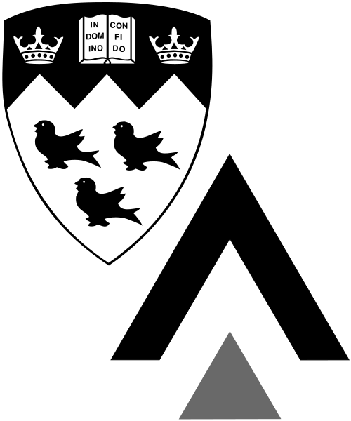

Renaud Raquépas
Je suis Phillip Griffiths Assistant Research Professor au département de mathématiques à Duke University, reçu par Jonathan Mattingly.
Auparavant, j'étais Courant Instructor au département de mathématiques du Courant Institute à NYU, reçu par la professeure Lai-Sang Young, et chercheur post-doctoral à CY Cergy Paris Université (Laboratoire AGM), travaillant avec le professeur Armen Shirikyan.
J'ai terminé mon doctorat (PhD) en 2020 à l'Université McGill (Départment de mathématique et de statistique) et à l'Université Grenoble Alpes (Institut Fourier), sous la direction conjointe des professeurs Vojkan Jakšić et Alain Joye.
Motivé par certains aspects dynamiques de la mécanique statistique dans les systèmes classiques comme quantiques, j'étudie, développe et applique des outils venant de différentes branches des mathématiques :
- la théorie des probabilités (grandes déviations, équations différentielles stochastiques);
- les systèmes dynamiques et la théorie ergodique (récurrence, mélange, théorie des C*-algèbres, systèmes dynamiques aléatoires);
- la théorie des opérateurs (spectres, resolvantes, théorie de la perturbation, semi-groupes).
Mes prépublications et mes publications sont consignées sur mes pages ORCID, arXiv et Research Gate ainsi que sur la page Research (version anglaise). Commentaires, questions et corrections sont les bienvenus.
- Y. Bakhtin, R. Raquépas et L.-S. Young. Random attractors and nonergodic attractors for diffusions with degeneracies.
- E. Hess-Childs, R. Raquépas et K. Rowan. Divergence-free drifts decrease concentration.
- N. Barnfield, R. Grondin, G. Pozzoli et R. Raquépas. On the Ziv–Merhav theorem beyond Markovianity II.
- Zhizhang Wu, Renaud Raquépas, Jack Xin et Zhiwen Zhang. Computing large deviation rate functions of entropy production for diffusion processes by an interacting particle method. SIAM J. Sci. Comput. 47, A3330–A3355 (2025).
- J. Schenker et R. Raquépas. Quenched large deviations of Birkhoff sums along random quantum measurements. Ann. Henri Poincaré, Online First (2025).
- N. Barnfield, R. Grondin, G. Pozzoli et R. Raquépas. On the Ziv–Merhav theorem beyond Markovianity I. Canadian J. Math. 77, 891-915 (2025).
- N. Cuneo et R. Raquépas. Large deviations of return times and related entropy estimators on shift spaces. Commun. Math. Phys. 405, article 135 (2024).
- R. Raquépas. The large-time and vanishing-noise limits for entropy production in nondegenerate diffusions. À paraître dans Ann. Inst. Henri Poincaré Probab. Stat. 60, 431–462 (2024).
- G. Cristadoro, M. Degli Esposti, V. Jakšić et R. Raquépas. On a waiting-time result of Kontoyiannis: mixing or decoupling? Stoch. Proc. Appl. 166, 104222 (2023).
- R. Raquépas. A gapped generalization of Kingman's subadditive ergodic theorem. J. Math. Phys. 64, 062702 (2023).
- G. Cristadoro, M. Degli Esposti, V. Jakšić et R. Raquépas. Recurrence times, waiting times and universal entropy production estimators, Lett. Math. Phys. 113, article 19 (2023).
- S. Andréys, A. Joye et R. Raquépas. Fermionic walkers driven out of equilibrium. J. Stat. Phys. 184, article 14 (2021).
- V. Nersesyan et R. Raquépas. Exponential mixing under controllability conditions for SDEs driven by a degenerate Poisson noise. Stoch. Proc. Appl. 138, 26–55 (2021).
- R. Raquépas. On Fermionic walkers interacting with a correlated structured environment. Lett. Math. Phys. 110, 121–145 (2020).
- T. Benoist, A. Panati et R. Raquépas. Control of fluctuations and heavy tails for heat variation in the two-time measurement framework. Ann. Henri Poincaré 20, 631–674 (2019).
- R. Raquépas. A note on Harris’ ergodic theorem, controllability and perturbations of harmonic networks. Ann. Henri Poincaré 20, 605–629 (2019).
- E. P. Hanson, A. Joye, Y. Pautrat et R. Raquépas. Landauer’s principle for trajectories of repeated interaction systems. Ann. Henri Poincaré 19, 1939–1991 (2018).
- E. P. Hanson, A. Joye, Y. Pautrat et R. Raquépas. Landauer’s principle in repeated interaction systems. Commun. Math. Phys. 349, 285–327 (2017).
Parcours
 Phillip Griffiths Assistant Research Professor, 2022–
Phillip Griffiths Assistant Research Professor, 2022–
Département de mathématiques
Duke University, Durham NC
Mentor: Professeur Jonathan Mattingly
Courant Instructor, 2022–
Département de mathématiques du Courant Institute
New York University, New York NY
Mentor: Professeure Lai-Sang Young
Chercheur post-doctoral, 2021–2022
Mathématiques (Laboratoire AGM)
CY Cergy Paris Université, Cergy-Pointoise (Île-de-France)
Mentor : Professeur Armen Shirikyan

Doctorant, 2017–2020
Mathématiques
Université McGill, Montréal (Québec) et Université Grenoble Alpes, Grenoble (Isère)
Directeurs : Professeurs Vojkan Jakšić et Alain Joye
Thèse : Outils et résultats pour l'étude de la production d'entropie
Étudiant à la maîtrise (MSc), 2016–2017
Mathématiques et statistique
Université McGill, Montréal (Québec)
Directeur : Professeur Vojkan Jakšić
Mémoire : Statistiques complètes de la chaleur et régularité des interactions en mécanique statistique quantique